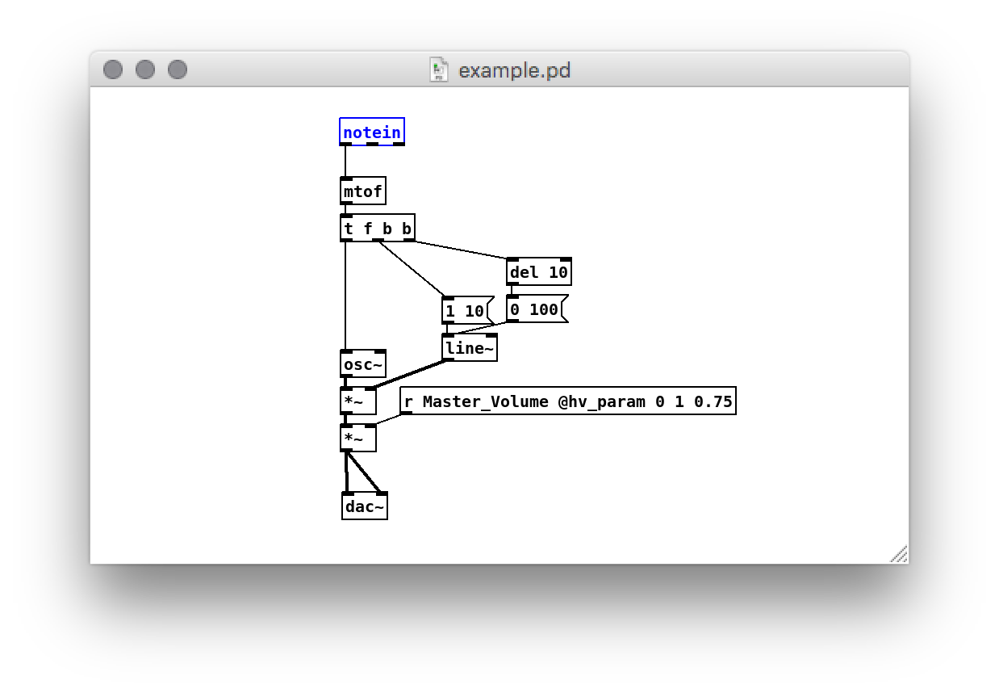
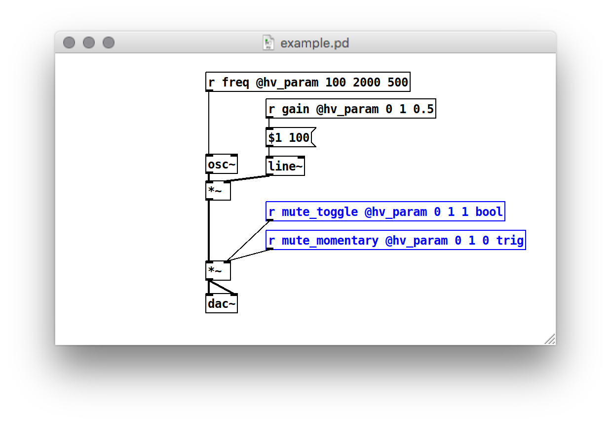

DPF
Heavy can generate LV2, VST2, VST3, CLAP, and AU plugins from your patch using the Distrho Plugin Framework. It can be either a synth (output-only) or an effect (input and output), supports an arbitrary number of parameters, and can process midi events.
Some examples are built for the major operating systems (Linux/Windows/MacOS) in various formats (LV2/VST2/VST3/CLAP). AU format will only compile on MacOS.
Defining Parameters
Each exposed parameter will automatically generate a slider in the plugin interface.
MIDI Control
In order to receive MIDI note on and off events, as well as control change messages, the [notein] and [ctlin] objects should be used, respectively.
DPF supports all note/ctl/pgm/touch/bend I/O events. The implementation is further discussed in the midi docs

Host Transport Events
We can use [midirealtimein] to receive host transport events in the form of realtime midi messages like clock/start/continue/stop/reset (no active sense). It is up to the user to create the appropriate handling inside the patch.
This object does not require the plugin to have MIDI input enabled.
Additionally you can use the special [r __hv_dpf_bpm] receiver to get the current transport BPM value directly.
Parameter Types
In DPF a parameter can get an optional type configured. The default type is float.
Other assignable types are int - or whole numbers, bool - for toggling a value, and trig - for momentary signals.

Using jinja the v.attributes.type can be evaluated for a specific string and different templating applied to the parameter. In DPF the extra types bool and trig result in the following plugin code:
parameter.hints = kParameterIsInteger
// or
parameter.hints = kParameterIsBoolean;
// or
parameter.hints = kParameterIsTrigger;
Other special types can give additional information to the host:
dB- unitdB- min_value-inflabel (assumes0.0f)Hz- unitHzlog- hintskParameterIsLogarithmiclog_hz- unitHz- hintskParameterIsLogarithmic
Metadata
An accompanying metadata.json file can be included to set additional plugin settings.
The project flag creates a README.md and Makefile in the root of the project output, but may conflict with other generators.
Each of these are optional and have either a default value or are entirely optional (description and homepage). Midi i/o ports are on by default, but can be set to 0 and they will be disabled - currently midi_input always has to be on!.
{
"dpf": {
"project": true,
"description": "super simple test patch",
"maker": "nobody",
"brand_id": "Nbdy",
"unique_id": "tsTr",
"homepage": "https://wasted.audio/plugin/dpf_example",
"plugin_uri": "lv2://wasted.audio/lv2/dpf_example",
"version": "6, 6, 6",
"license": "WTFPL",
"midi_input": 1,
"midi_output": 0,
"plugin_formats": [
"lv2_sep",
"vst2",
"vst3",
"au",
"clap",
"jack"
]
}
}
Other fields that the DPF metadata supports are:
port_groups- If your plugin has more audio i/o that need to be grouped together or given Control Voltage statusenumerators- Configure a set of parameters that cycle over<key>: <value>enable_ui- Boolean that creates a generic GUI. Requiresdpf-widgetson the same level asdpf.enable_modgui- Boolean for use in MOD audio based systems.ui_size- Dict ofwidth&heightthat sets the size of the UI.brand_id- A 4-character symbol that identifies a brand or manufacturer, with at least one non-lower case character. Plugins from the same brand should use the same symbol. Required when using AU.brand_id_no_vst3- Boolean to ensure old VST3 behavior.unique_id- A 4-character symbol which identifies a plugin. It must be unique within at least a set of plugins from the brand. Required when using AUplugin_clap_id- A URI for use with CLAP format.lv2_info- String describing the LV2 plugin type.vst3_info- String describing the VST3 plugin type.clap_info- List of strings describing the CLAP plugin type.
You can also fully disable SIMD optimizations using the global nosimd flag:
The full type specification can be found here.
An example plugin that uses some of these extended metadata is WSTD 3Q.
Notes
- The
[notein]object is the only supported means of receiving MIDI note events (i.e. Note On and Note Off). Arguments to the object (e.g. to specify the channel number) will be ignored. Velocity of0will be assumed to mean Note Off - The
[ctlin]object is the only supported means of receiving MIDI control change events. Arguments to the object (e.g. to filter which CC event is delivered) will be ignored. - If you are compiling from source, make sure to read the included
README.mdfile in the root directory.